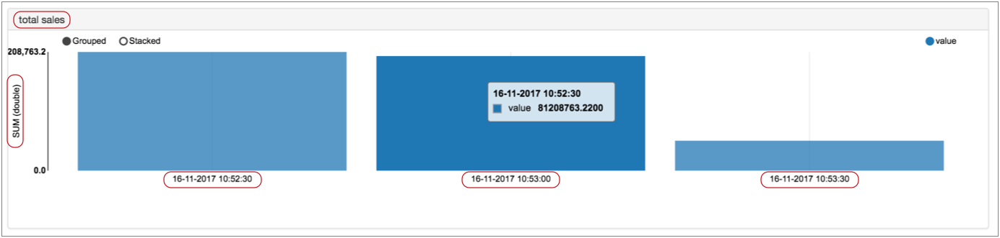
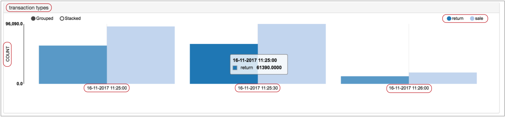

Windowing Aggregator
Supported pipeline types:
|
The Windowing Aggregator processor performs one or more aggregations within a window of time. The Windowing Aggregator processor displays the results in Monitor mode and can write the results to event records. The processor does not update records in the data stream.
You might use aggregation results with Data Collector data alerts to generate threshold notifications. Or, you might write the events to a data store and use a third-party dashboard application to visualize the data.
When you configure the Windowing Aggregator, you specify the window type and time window to use. This information determines how the processor displays data and generates events. You also specify the time zone to use and the aggregations to perform.
When you configure an aggregation, you specify the aggregation name and display title and the aggregation function to use. You can optionally define a filter expression to process a subset of the data, and a group by expression to aggregate based on groups.
To write the aggregation results to events, enable event generation, configure the type of event records to create, and optionally specify the type of root field to use. For general information about dataflow triggers and the event framework, see Dataflow Triggers Overview.
Window Type, Time Windows, and Information Display
The aggregation window type determines the window of time that the Windowing Aggregator processor uses to calculate aggregations. It also determines how the processor generates charts and events.
The time window is the period of time to use for the specified window type. Time window behavior is specific to the window type that you select.
For example, when you configure a rolling window type with a one hour time window, the processor performs aggregations every hour on the hour using the records that passed through the processor during each hour.
Conceptually, you might say that with a rolling window, records are static within the window where they occur. When records become part of a particular time window, they remain there. And once the calculations for a time window are complete, they remain static as well.
In contrast, when you select a one hour time window for a sliding window type, the aggregations are always based on the records that passed through the processor in the past hour, providing an update of the calculations at regular intervals.
Conceptually, the sliding window is locked into the current time, and records slide through the window. Records that have moved past the window are no longer part of sliding window calculations.
Rolling Windows
When using a rolling window, the Windowing Aggregator processor performs the aggregations on the set of records that pass through the processor within specific time windows. Use a rolling window to generate periodic historic analysis of the data passing through the pipeline.
With a rolling windows of less than an hour, the time windows are incremented based on the start of the hour, rather than on the start time of the pipeline.
For example, when you select a fifteen minute time window, the aggregations are calculated every fifteen minutes, starting on the hour. So if you start the pipeline at 8:09, the first aggregation occurs at 8:15, and the following aggregations at 8:30, 8:45, 9:00, and so on. In fact, if you start the pipeline anywhere between 8:01 and 8:14, the aggregations start at 8:15 and continue every 15 minutes.
With rolling windows of an hour or more, the time windows are incremented based on the start of the day, at 12:00 AM.
For example, when you choose a six hour time window, the aggregations are calculated at 12 AM, 6 AM, 12 PM, and 6 PM. So if you start the pipeline at 10:10 AM, the first aggregation occurs at 12 PM, the next at 6 PM, and so on.
For rolling windows, the processor creates the charts in Monitor mode based on the time window and the Number of Time Windows to Remember. For example, if you set the property to 4, and use a 15 minute time window, then the resulting charts display four 15 minute time windows.
The processor also creates events with the results of the calculations based on the time window. So with a 15 minute time window, it generates events every 15 minutes, based on the hour.
Note that the calculations from the first event can include less than a full time-window of records, for reasons described above. Similarly the last event, generated when the pipeline stops, can include calculations with less than a full time-window of records.
Sliding Windows
When using a sliding window type, the Windowing Aggregator processor performs the aggregations on the latest set of records within the specified time window. With a sliding window, the time window is always relative to the current time.
Rather than capturing the history of the calculations as with a rolling window, the sliding window provides updates to the current set of aggregations. Use a sliding window to provide real time information about the data passing through the processor.
For example, say you configure a sliding window with a 30 second time window. When you run the pipeline, the processor displays a single chart with information from the records that passed through the processor in the last 30 seconds. And it updates the single chart regularly.
In Monitor mode, the calculations and resulting charts are updated every few seconds for all time window intervals. The charts indicate the time that it was last updated.
When generating events, the processor generates events at regular intervals based on the specified time window, beginning as soon as the pipeline starts.
For example, for a sliding window type with a time window of one hour, the processor generates events every minute. So if you start the pipeline at 9:08, the processor generates events with the results of the calculations starting at 9:09, then 9:10, 9:11, etc.
Note that the results of the first hour of calculations contain less data than the specified one hour time window. At 10:08, the processor provides the results of the first one hour time window. At 10:09, the processor includes all of the latest records for the last hour in the calculations, dropping the records that had arrived between 9:08 and 9:09 since they have fallen out of the time window.
| Sliding Time Window | Event Generation Occurs... |
|---|---|
| 1 minute | Every 5 seconds from the start of the pipeline |
| 5 minutes | Every 5 seconds from the start of the pipeline |
| 10 minutes | Every 10 seconds from the start of the pipeline |
| 30 minute | Every 30 seconds from the start of the pipeline |
| 1 hour | Every 1 minute from the start of the pipeline |
| 6 hours | Every 5 minutes from the start of the pipeline |
| 12 hours | Every 10 minutes from the start of the pipeline |
| 24 hours | Every 20 minutes from the start of the pipeline |
Calculation Components
- Aggregate function and expression
- When you select the aggregate function to use, you typically also configure an aggregate expression. All aggregate functions except the COUNT function require an expression.
- Filter
- Configure a filter to limit the records used in calculations. A filter is an expression that evaluates to a boolean value. Records that evaluate to true are included in the aggregation.
- Group by expression
- A group by expression is an expression used to group data before performing calculations. Use a group by expression to add an additional dimension to the results.
For additional examples and information on how the aggregation results display in Monitor mode, see Monitoring Aggregations.
Aggregate Functions
When you configure an aggregation, you select the aggregate function to use. When appropriate, you can select the data type to use for the results of the aggregation.
- Avg (Integer or Double)
- Count (Integer only)
- Min (Integer or Double)
- Max (Integer or Double)
- StdDev (Integer or Double)
- Sum (Integer or Double)
Event Generation
The Windowing Aggregator processor can generate events that contain the results of the aggregations. The processor can generate events that include the results of all aggregations. It can also generate events for the results of each individual aggregation.
- With a destination to store event information.
For an example, see Preserving an Audit Trail of Events.
- With a data
alert to send notifications.
You can configure data alerts on the event stream to notify upon reaching specified thresholds.
- With the Email executor to send a custom email
after receiving an event.
For an example, see Sending Email During Pipeline Processing.
Event Record Root Field
By default, the Windowing Aggregator processor generates event records by writing record data as a JSON string to a String root field. You can configure the processor to generate event records by writing JSON data to a Map root field, like other event records.
Both record formats provide the same data. When performing additional processing with event records in the same pipeline, using the Map root field should be more efficient. When writing the event record to destinations without additional processing, using the String root field should be more efficient.
Choose the option that seems more appropriate for your use case. Use the Produce Event Record with Text Field property on the Events tab to specify the root field to use.
Event Records
| Record Header Attribute | Description |
|---|---|
| sdc.event.type | Event type. Uses one of the following event types:
|
| sdc.event.version | Integer that indicates the version of the event record type. |
| sdc.event.creation_timestamp | Epoch timestamp when the stage created the event. |
The Windowing Aggregator processor can generate the following event records:
- Single aggregation event
- You can configure the Windowing Aggregator processor to create single aggregation events. Each event contains the results of a single aggregation. That is, when you configure the processor to generate single aggregation events, the processor produces a set of events each time the processor performs calculations. The frequency of event generation depends on the selected window type and time window.
- All aggregation event
- You can configure the Windowing Aggregator processor to create an all aggregation event that includes the results of all configured aggregations. The frequency of event generation depends on the selected window type and time window.
Monitoring Aggregations
In addition to standard stage statistics, the Windowing Aggregator processor provides aggregation charts that you can monitor when you run the pipeline. The processor generates one chart for every aggregation, using the specified title for the chart name.
The contents and display of the charts depend on the aggregation and stage properties. For example, when using a group by expression, the chart displays a bar for each group.
When using a sliding window, charts display the date and time that the chart was last updated.
When using a rolling window, charts contain the results for multiple time windows based on the Number of Time Windows to Remember property. Charts display the date and time that the time window closes. The most recent time window can be in progress, displaying the latest details as the processor continues to aggregate data within the time window.
For example, say you have a Windowing Aggregator processor using a rolling window and a 30 second time window. It is configured to remember three time windows and uses the following aggregation to perform a sum of all sales, using a filter to exclude returns:

The processor generates the following "total sales" chart:

Notice, the aggregate function, SUM (double), displays on the left side of the chart and the end of each time window displays under each bar. You can see that the interval between the time windows is 30 seconds, as configured in the stage.
The results for the third time window seem low, but this is because the time window is still active -- the calculations are ongoing and the results are updated until the time window closes. Like other Data Collector charts and graphs, when you hover over a particular section, relevant details display. In this case, the "value" is the sum of the sales that occurred in the time window.
In the same Windowing Aggregator processor, you might use the following aggregation configuration to determine the count of sales and returns. The group by expression enables counting each transaction type:

In the resulting "transaction types" chart, the COUNT function displays on the left, and separate bars represent the return and sale groups:

To view Windowing Aggregator charts and statistics, view the pipeline in Monitor mode, and then select the Windowing Aggregator processor.
Configuring a Windowing Aggregator
Configure a Windowing Aggregator processor to perform aggregations within a time window.